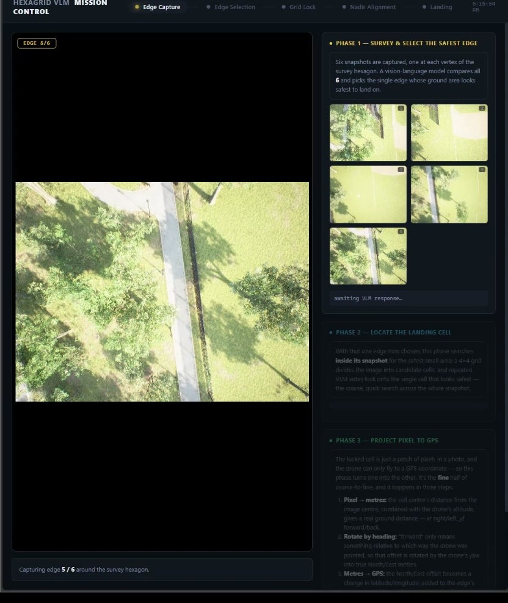

A drone flies a hexagon over an unknown area, captures the view from each vertex, and asks a vision-language model which direction is safest to land. It then narrows that view to a single grid cell, converts the cell to a GPS coordinate, flies there and lands, with no operator input at any step. Runs against PX4 SITL in AirSim with a local VLM; nothing leaves the machine.
How it works
The problem is choosing where to put an aircraft down in terrain nobody has surveyed, using a model that is good at describing scenes and bad at being trusted. Each of the four phases exists to take one more decision away from a single model output.
Phase 1: six views, one inference
The vehicle flies a hexagon and captures a snapshot at each vertex. Those six images are composited into a single labelled mosaic and sent to the VLM as one image, which returns the number of the safest edge.
Comparison is the actual task here. Scoring six images independently costs six inferences and still leaves the model unable to see the alternatives it is ranking against. It can only say "this looks fine", never "this one, rather than that one". Compositing makes the comparison native to the prompt, and costs a single call.
Phase 2: grid confidence lock
A numbered 4×4 grid is overlaid on the winning snapshot and re-queried repeatedly. Cell scores decay each round and are boosted when a cell is named again, until one crosses a lock threshold.
This is the part that matters for safety. A single VLM answer is not trustworthy enough to commit an aircraft to a landing. Requiring a cell to win repeatedly turns an unreliable one-shot judgement into a stable decision, and an answer that was a one-off hallucination simply decays away instead of being acted on.
Phase 3: pixel to GPS
The locked cell is still just a patch of pixels. Its offset from the centre of the frame is converted to a metric ground distance using the camera's field of view and the vehicle's altitude, rotated by the current heading into a north/east offset, and added to the vehicle's position to produce a target coordinate the flight controller can actually fly to.
Phase 4: automatic landing
Once telemetry shows the vehicle has arrived and settled over the target, the land command fires on its own. There is no button and no operator step. Arrival is judged from ground speed and altitude, and touchdown is confirmed the same way, so the sequence never waits on an acknowledgement the flight controller was not built to send.
Operator interface
Every phase pushes its current overlay and a status line into the QGroundControl video feed, so the operator watches the reasoning as it happens rather than a raw camera stream. An autonomous system that cannot be watched cannot be trusted, and the overlay costs almost nothing to produce.
Alongside it runs a local mission-control page: a phase stepper, the snapshot tray and the model's reasoning as they arrive, the grid-lock vote history, and during alignment a live nadir feed with the locked cell frozen above it, so convergence is something you watch happen rather than a claim to take on faith.
Mission control
The dashboard is served by a local web server with no dependencies beyond the Python standard library, streaming events to the page as the mission runs. It replaced a scatter of pop-up OpenCV windows that could not be arranged, recorded or watched from anywhere but the machine running the flight.

Notes
The camera that pointed the wrong way
An AirSim settings.json with "Pitch": 0 produces a forward-facing
"down" camera, which I confirmed by seeing the horizon and the vehicle's own rotors in
frame. The fix is pitch −90 plus a stabilised gimbal block, so the image stays
truly nadir at any airspeed and body tilt. Worth stating plainly, because it silently
invalidates every geometric assumption downstream: the pixel-to-metre conversion in Phase 3 is
only meaningful if the camera really is looking straight down.
Confirming touchdown without a flight-controller handshake
The flight controller is a separate C++ program communicating over UDP, and it has no message for "I have landed". Rather than add one and couple the two halves more tightly, arrival and touchdown are both read from the simulator's own state. It keeps the Python side authoritative about what phase the mission is in, and means the pipeline degrades to a stall rather than a false confirmation if the vehicle never actually settles.
Composes with Survey-RAG
The pipeline picks up from the Survey-RAG arrival hold, making search and landing a single flow: retrieve a target from a plain-language request, fly to it, then choose a safe touchdown point once overhead.